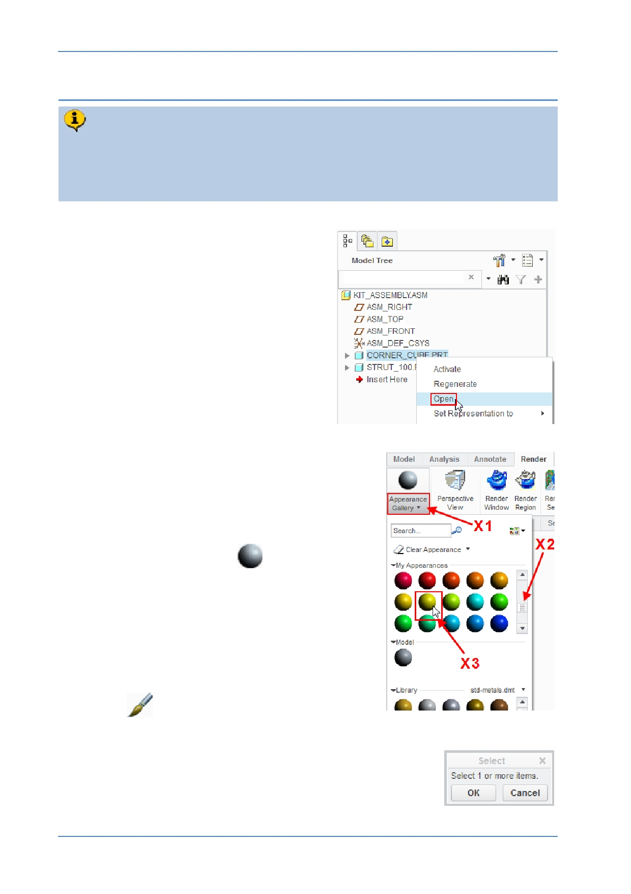

PTC Academic Program
Step 4: Applying colors and textures to the parts
Creo Parametric lets you apply appearances to your model that represent a wide
range of colors, textures, transparency and lighting. A library of predefined
appearances represent many standard materials but you can also create your
own. You will now apply appearances to the parts you created.
1. If necessary, set the working directory
then open the KIT_ASSEMBLY.ASM
model.
2. Opening the corner cube part from the
assembly:
In the model tree, right-click
CORNER_CUBE.PRT and select
Open from the pop-up menu.
The corner cube part will open in a new Creo
Parametric window.
3. Applying an appearance to the part:
Click to open the Render tab.
Click the Appearance Gallery text X1 , just below
the gray appearance ball
.
In the My Appearances section of the dialog box,
scroll X2 through the color balls until you find a
color you would like to apply.
Click to select the color X3 you want applied to
the model.
The Appearances Gallery will close and, when the
cursor is in the graphics window, it will change to a
paint brush
.
Move the mouse into the model tree and click the part
name CORNER_CUBE.PRT ; this will select the entire part.
Click OK in the Select dialog box or middle-click in the
graphics area to apply the appearance.
© 2012 PTC
Creo Parametric 2.0 Primer
Page 75